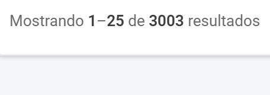
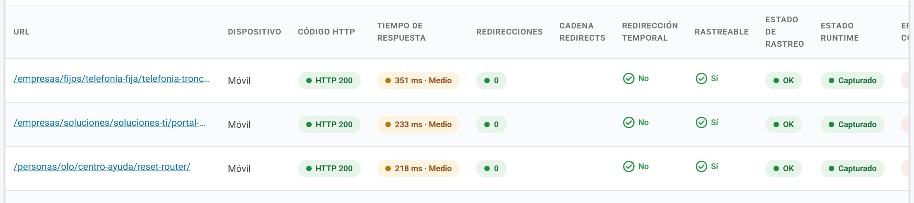
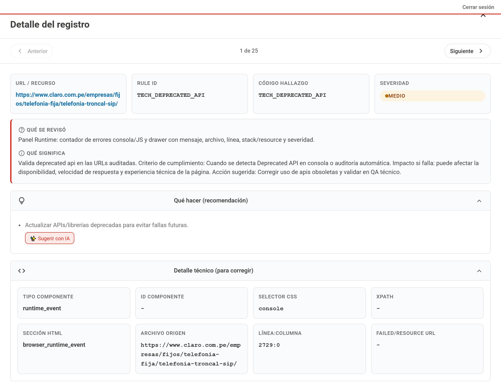
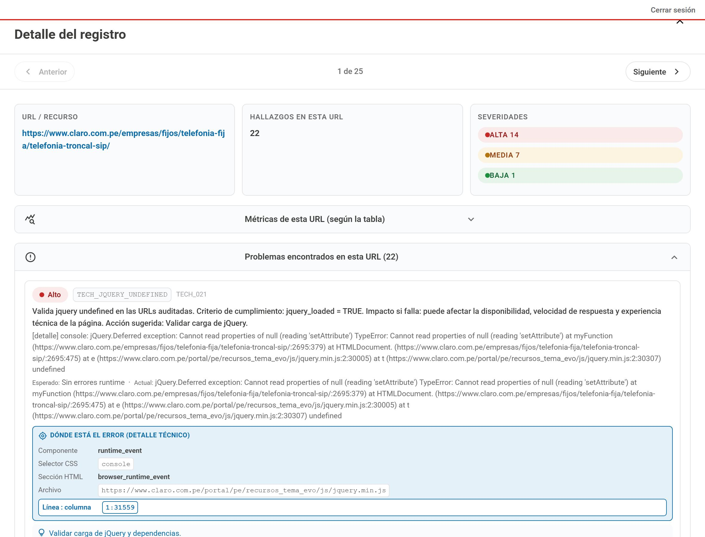
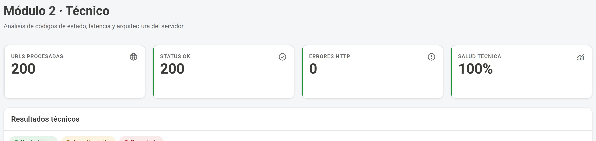
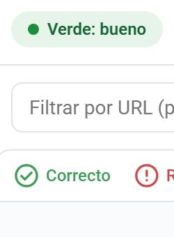

Los diez cambios
Resumen para revisar de un vistazo. Cada fila enlaza con su comparación visual.
| # | Cambio | Cómo está hoy | Cómo queda |
|---|---|---|---|
| 1 | Una tabla en lugar de dos | Dos tablas cargan juntas: 200 filas y 3 003 filas, 121 páginas en la segunda. | Una sola tabla con dos vistas conmutables. La espera baja de 4,7 s. |
| 2 | Seis columnas en lugar de diecisiete | Nueve columnas repiten el mismo valor en todas las filas y una está vacía. | Seis columnas visibles; el resto, opcionales desde un selector. |
| 3 | La URL completa y siempre visible | La URL se corta a media ruta y desaparece al desplazarse a la derecha. | Columna fija, texto completo: nunca se pierde la referencia. |
| 4 | «Ver detalles» al alcance | Está en la columna 17, a 586 px de desplazamiento. No se ve al entrar. | La fila entera abre el detalle, con indicador en la primera columna. |
| 5 | Un solo panel de detalle | Dos paneles distintos, uno por tabla, con secciones y estructura diferentes. | Un único panel, igual desde cualquier fila. |
| 6 | Hallazgos agrupados por regla | La misma definición se repite hasta 5 veces y cada hallazgo aparece dos veces. | Una definición por regla y las ocurrencias debajo. |
| 7 | El encabezado dice lo que pasa | «Salud técnica 100 %» sobre una tabla con 14 hallazgos altos en la primera URL. | «178 de 200 URLs con hallazgos» como titular; el HTTP correcto, como dato secundario. |
| 8 | Estado con texto, no sólo color | El estado se lee por color, y el verde usado no alcanza el contraste mínimo. | Color y palabra juntos, con verde corregido. |
| 9 | El panel se maneja con teclado | Al abrirlo el foco se queda fuera y el fondo sigue desplazándose. | Diálogo real: el foco entra, queda dentro y vuelve al salir. |
| 10 | Los campos completos, con buscador | Los 36 campos del registro y los 28 del hallazgo se recorren a mano, sin buscar. | Los mismos 64 campos, con un buscador en cada tabla y los redundantes señalados. |
Nada se pierde
Cada sección y cada campo de los dos paneles actuales, y dónde queda en la propuesta.
| Contenido de hoy | Dónde está hoy | Dónde queda en la propuesta |
|---|---|---|
| Resumen de severidades Alta 14 · Media 7 · Baja 1 |
Panel de Resultados · tres tarjetas de cabecera | Cabecera del panel, en una línea de chips |
| Métricas de esta URL 7 tarjetas |
Panel de Resultados · acordeón «Métricas de esta URL (según la tabla)» | Acordeón «Métricas de esta URL», abierto por defecto, con 8 valores: se añade console_warning_count, que existe en el registro y hoy no se muestra |
| Desglose de recursos fallidos | Panel de Resultados · nota bajo las métricas | Misma nota, dentro del acordeón de métricas |
| Problemas encontrados 22 bloques |
Panel de Resultados · acordeón «Problemas encontrados en esta URL (22)» | Sección «Problemas encontrados», agrupados por regla: mismo contenido, sin repetir la definición |
| Datos del registro 36 campos |
Panel de Resultados · acordeón «Datos del registro (todos los campos)» | Acordeón «Datos del registro · 36 campos», con buscador de campo o valor |
| Qué se revisó | Panel de Hallazgos · caja de cabecera (front_label) |
Dentro del grupo de la regla, una vez por regla |
| Qué significa | Panel de Hallazgos · caja de cabecera (business_description) |
Dentro del grupo de la regla, una vez por regla |
| Qué hacer (recomendación) + Sugerir con IA |
Panel de Hallazgos · acordeón | Dentro del grupo de la regla, con el botón «Sugerir con IA» a 44 px |
| Detalle técnico 8 campos: tipo e ID de componente, selector CSS, XPath, sección HTML, archivo origen, línea:columna, failed/resource URL |
Panel de Hallazgos · acordeón «Detalle técnico (para corregir)» | Los 8 campos en cada ocurrencia. Los vacíos se marcan «sin dato» en lugar de mostrar un guion: que falte el valor también informa |
| Valor esperado y detectado | Panel de Hallazgos · línea «Esperado · Actual», con el volcado repetido | Par «Esperado / Detectado» por ocurrencia, y el volcado una sola vez en bloque desplazable |
| Todos los campos (técnico) 28 campos |
Panel de Hallazgos · acordeón | Acordeón «Datos del hallazgo · 28 campos», con buscador y los cinco campos redundantes señalados |
| Rule ID y Código hallazgo | Panel de Hallazgos · dos tarjetas de cabecera con el mismo valor | Nota al pie del grupo de la regla; los cinco campos siguen en la tabla completa |
| Navegación entre registros Anterior · 1 de 25 · Siguiente |
Cabecera de ambos paneles | Se mantiene, y pasa a contar sobre el total real en lugar de sobre la página de 25 |
| Nombre legible de la regla | No se usa: la interfaz muestra el código. rule_name ya viene en la respuesta con «Deprecated API» |
Título del grupo, con el código al lado en menor tamaño |
Catorce elementos de contenido en los dos paneles actuales. Los catorce están en la propuesta; dos de ellos —los 36 campos y los 28 campos— ganan buscador, y dos aportan información que hoy existe en los datos pero no se muestra.
La pantalla propuesta
Maqueta navegable con los diez cambios aplicados. Puede filtrar, cambiar de vista, elegir columnas, expandir filas, abrir el panel y buscar entre sus campos.
Módulo 2 · Técnico
200 URLs medidas el 17 jul, 12:02. Todas responden HTTP 200 y sin redirecciones · 178 tienen errores en runtime
- URLs con hallazgos
- 178 de 20089 % del total medido
- Severidad alta
- 14 en la peor URLjQuery undefined, APIs deprecadas
- Respuesta media
- 253 msumbral 1 000 ms · dentro
- Disponibilidad HTTP
- 100 %200 de 200 responden 200
| URL | Respuesta | Problemas | Código HTTP | Redirecciones | Redir. temporal | Estado rastreo |
|---|
| Regla | Severidad | URLs | Ocurrencias | Qué hacer |
|---|
Detalle de la URL
Los recuentos son los valores reales de las columnas del módulo. El desglose por severidad (14 alta · 7 media · 1 baja) y el volcado de consola provienen del panel real de la primera URL.
Cambio a cambio
A la izquierda la pantalla de hoy; a la derecha, la propuesta.
Cambio 1
Una tabla en lugar de dos
Hoy la pantalla carga dos tablas a la vez. «Resultados técnicos» trae 200 filas y «Hallazgos técnicos» trae 3 003 —unos quince hallazgos por URL, repartidos en 121 páginas—. La segunda tabla es el mismo contenido que el panel de detalle ya muestra agrupado por URL. La propuesta deja una sola tabla y convierte las dos en dos vistas del mismo dato, conmutables con un botón.
Hoy · dos tablas, 3 203 filas

Pie de «Hallazgos técnicos»: 3 003 resultados. La primera tabla dice 200.
Propuesta · un conmutador
Dos vistas del mismo dato
«Por regla» agrupa las 3 003 filas en las reglas que las originan. Se renderiza una tabla a la vez, no dos.
Cambio 2
Seis columnas en lugar de diecisiete
De las diecisiete columnas de «Resultados técnicos», nueve muestran el mismo valor en todas las filas —Dispositivo, Código HTTP, Redirecciones, Redirección temporal, Rastreable, Estado de rastreo, Estado runtime, Mixed content y Errores CORS— y «Cadena redirects» está vacía. Esas columnas ocupan el ancho que empuja «Ver detalles» fuera de la pantalla. Lo que no varía sube al encabezado como un hecho único.
Hoy · 17 columnas, 1 910 px

Cuatro filas seguidas: «Móvil», «HTTP 200», «0», «No», «Sí», «OK», «Capturado». «Cadena redirects» aparece vacía. · ver a tamaño real
Propuesta · 6 visibles
Hoy · 17 columnas
Propuesta · 6 columnas
Las once restantes quedan disponibles en el selector «Columnas».
Cambio 3
La URL completa y siempre visible
La URL es el identificador de la fila, y hoy se corta a media ruta —«/empresas/fijos/telefonia-fija/telefonia-tronc…»— mientras columnas con un valor repetido reciben ancho completo. Además, al desplazarse a la derecha para llegar a «Ver detalles», la URL desaparece de la vista y se pierde la referencia de qué fila se está leyendo. En la propuesta la columna de URL queda fija al desplazar.
Hoy · truncada y no fija
Dos de las tres rutas visibles terminan en puntos suspensivos. · ver a tamaño real
Propuesta · fija y completa
Desplace la tabla a la derecha: la URL se queda
| URL | Respuesta | Problemas | Err. consola | Err. JS | Recursos | CSP | Mixed | CORS |
|---|---|---|---|---|---|---|---|---|
| /empresas/fijos/telefonia-fija/telefonia-troncal-sip/Móvil | 351 ms | 14 alta | 4 | 3 | 8 | 2 | 0 | 0 |
| /personas/olo/centro-ayuda/reset-router/Móvil | 218 ms | 13 problemas | 2 | 1 | 8 | 2 | 0 | 0 |
La ruta se muestra entera, en dos líneas si hace falta.
Cambio 4
«Ver detalles» al alcance
El panel de detalle es lo más útil de la pantalla: da el componente, el selector CSS, el archivo y la línea exacta del error. Pero su botón está en la columna 17 de 17, a 586 px de desplazamiento horizontal: no se ve al entrar. En la propuesta la fila entera abre el detalle, con un indicador en la primera columna, y al expandirla se ven las seis métricas de runtime sin necesidad de abrir nada.
Hoy · columna 17
Recorrido hasta el botón
586 px de desplazamiento, con 89 × 40 px de botón al final.
Propuesta · la fila entera
Pulse la fila
| URL | Respuesta | Problemas |
|---|---|---|
| /empresas/fijos/telefonia-fija/telefonia-troncal-sip/Móvil | 351 ms | 14 alta7 media |
| ||
Cambio 5
Un solo panel de detalle
Cada tabla abre su propio panel, y son dos diseños distintos. El de «Resultados técnicos» tiene tres secciones —Métricas de esta URL, Problemas encontrados, Datos del registro— con 892 elementos y 29 772 caracteres. El de «Hallazgos técnicos» tiene otras tres —Qué hacer, Detalle técnico, Todos los campos— con 216 elementos y 1 204 caracteres, y una cabecera de cuatro tarjetas diferente. Son dos formas de leer la misma auditoría, y hay que aprender las dos.
Hoy · panel de «Hallazgos técnicos»

Cabecera de 4 tarjetas, secciones «Qué se revisó» y «Qué significa», y 8 campos técnicos. · ver a tamaño real
Hoy · panel de «Resultados técnicos»

Otra cabecera, otras secciones y otro orden para el mismo tipo de información. · ver a tamaño real
La propuesta usa un único panel —el de la maqueta de arriba— que reúne las seis secciones de los dos: resumen de severidades, problemas agrupados por regla (con «qué se revisó», «qué significa» y «qué hacer» dentro de cada regla), métricas de la URL, los 36 campos del registro y los 28 campos del hallazgo. La tabla «Nada se pierde» de más arriba lo detalla elemento por elemento.
Cambio 6
Hallazgos agrupados por regla
Dentro del panel, la definición de cada regla se imprime una vez por hallazgo: el mismo párrafo aparece cinco veces, otro cuatro y otro dos. Y cada problema figura dos veces —una como captura de consola y otra como texto— con el mismo código de regla, lo que infla el recuento a «22 hallazgos» en una URL. La propuesta imprime la definición una vez por regla y lista debajo las ocurrencias con lo único que cambia: archivo, línea y selector.
Hoy · la misma regla, dos bloques idénticos
Dos bloques seguidos con el código TECH_JQUERY_UNDEFINED y la definición completa en cada uno.
Propuesta · una regla, dos ocurrencias
alta jquery undefined TECH_JQUERY_UNDEFINED 2 ocurrencias
Qué valida la regla · una sola vezValida que jQuery esté cargado. Criterio: jquery_loaded = TRUE. Si falla, puede afectar la disponibilidad y la experiencia técnica de la página.
- Componente
- runtime_event
- Archivo
- …/recursos_tema_evo/js/jquery.min.js
- Línea
- 1:31559
Se detectó jQuery undefined en runtime · esperado: jquery loaded
- Componente
- runtime
💡 Validar carga de jQuery y dependencias.
Una definición, dos ocurrencias, un recuento honesto.
Cambio 7
El encabezado dice lo que pasa
Las cuatro tarjetas de cabecera dicen «URLs procesadas 200», «Status OK 200», «Errores HTTP 0» y «Salud técnica 100 %». Ese 100 % sólo mide códigos de respuesta HTTP, pero se llama salud técnica y ocupa el lugar de la conclusión: la primera fila de la tabla tiene 4 errores de consola, 3 de JavaScript, 8 recursos fallidos y 2 de CSP, y su panel declara 22 hallazgos, 14 de severidad alta. La propuesta pone como titular lo que el módulo realmente detecta.
Hoy · «Salud técnica 100 %»

El 100 % convive con 22 hallazgos en la primera URL. · ver a tamaño real
Propuesta · «178 de 200 con hallazgos»
- URLs con hallazgos
- 178 de 20089 % del total medido
- Severidad alta
- 14 en la peor URLjQuery undefined
- Respuesta media
- 253 msumbral 1 000 ms
- Disponibilidad HTTP
- 100 %200 de 200 responden 200
El dato correcto sigue estando, en su sitio: cuarto y sin llamarse «salud».
Cambio 8
Estado con texto, no sólo color
La pantalla explica su código de color con una leyenda —«Verde: bueno · Amarillo: medio ·
Rojo: alerta»— y deja el estado de cada celda a cargo de un punto de color. Quien no distingue
rojo de verde no puede leer la tabla, y el verde utilizado, #409F5B, da 3,31:1 de
contraste cuando el mínimo exigido es 4,5:1. En este módulo hay 52 elementos por debajo del
mínimo. La propuesta escribe la palabra junto al color y corrige el verde a
#14713D, que da 5,35:1.
Hoy · el color es la única pista

La leyenda está arriba; en las celdas, sólo el punto de color.
Propuesta · color y palabra
Un componente, cuatro estados
Se entiende en blanco y negro, y cada color pasa el contraste mínimo.
Cambio 9
El panel se maneja con teclado
Al abrir el panel, el foco del teclado se queda en el botón que lo lanzó, fuera del panel, así que hay que tabular a ciegas por toda la tabla para llegar a su contenido. El fondo sigue desplazándose detrás y el botón de cerrar mide 36 × 36 px. En la propuesta el panel es un diálogo: el foco entra al abrir, no puede salir mientras está abierto, Escape cierra y el foco vuelve exactamente a la fila desde la que se abrió.
Hoy
- El foco permanece fuera del panel al abrirlo.
- El tabulador recorre la tabla de fondo, no el panel.
- El fondo se desplaza detrás del panel.
- Cerrar mide 36 × 36 px y su nombre accesible es «close».
- Escape sí cierra: eso ya funciona.
Propuesta · pruébelo arriba
- El foco entra al panel y queda dentro.
- El tabulador da la vuelta sin salirse.
- El fondo queda bloqueado.
- Cerrar mide 44 × 44 px con nombre «Cerrar detalle».
- Escape cierra y el foco vuelve a la fila de origen.
En la maqueta de arriba: abra un detalle y pulse Tab varias veces.
Cambio 10
Los campos completos, con buscador
Los dos paneles terminan con un volcado completo del registro: 36 campos en el de Resultados
—desde run_id hasta is_crawlable, incluyendo content_type,
server_header y cache_control— y 28 en el de Hallazgos. Es información
valiosa para quien tiene que corregir, y hoy sólo se puede recorrer a mano de arriba abajo. La
propuesta conserva los 64 campos y les pone un buscador; además señala los cinco que contienen
el mismo valor y rescata dos datos que están en el registro pero en ninguna pantalla:
console_warning_count y el nombre legible de la regla, rule_name.
Hoy · 36 campos en una lista
Sin buscador, sin orden, sin marcas
| Campo | Valor |
|---|---|
| run_id | tc_20260717_165800_6127e9 |
| audit_date | 2026-07-17 |
| checked_ts | 2026-07-17T17:02:14.886155+00:00 |
| page_url | https://www.claro.com.pe/…/telefonia-troncal-sip/ |
| url_hash | 0c8dd34557229c9c83b3091edd398fc1 |
| …y 31 campos más, desplazando | |
Para saber el status_code hay que bajar catorce filas.
Propuesta · los mismos 36, buscables
Escriba «count» y quedan los contadores
| Campo | Valor |
|---|
Los 36 campos siguen ahí; en el panel real, también los 28 del hallazgo.